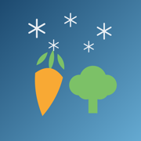

個人で作っている iPhone アプリと、その考え方。
Takayuki Takemoto と申します。会社に属さず、ひとりで iPhone のアプリを作っています。 ここは、公開しているアプリの説明と、それぞれのプライバシーポリシーや 問い合わせ先をまとめた場所です。
作っているものに派手さはありません。数を数える、割り勘の金額を出す、 今日の晩ごはんを決める、ぬか床をかき混ぜた日を記録する。 どれも「それ専用の道具があると助かるが、わざわざ探すほどでもない」 くらいの、生活の細かい部分を引き受けるアプリです。
数を増やすより、次の3つを守るほうを優先しています。 アプリの説明を読む前に、ここを知っておいてもらえると早いと思います。
ひとつのことだけをする。 機能を足すと、たいてい起動してから目的にたどり着くまでが遅くなります。 「これができない」と言われても、それが主目的でなければ足さないことがあります。
入力したものは、できるかぎり端末から出さない。 記録・メモ・写真は、原則としてお使いの端末の中だけに保存しています。 アカウント登録を求めるアプリもありません。 外部と通信する場合は、何をどこへ送るのかを各アプリのプライバシーポリシーに書いています。
使えなくなる日を作らない。 サーバーに依存する作りをできるだけ避けているので、こちらの都合でサービスが止まって 記録が読めなくなる、ということが起きにくいようにしています。 飛行機の中でも山の上でも動きます。
アプリを作る過程で調べたことのうち、アプリを使わない人にも役立つ部分を 記事にまとめています。冷凍保存の判断基準、ぬか床の症状別の手当て、 標高から装備を組み立てる考え方など。
アプリを作るときに悩んだ設計と、素朴にやって失敗した部分を書いています。 使い方の説明ではなく、なぜその作りにしたかの記録です。
Counter1234 配信中
画面を見ずに数えられるカウンター
在庫を数える、通行量を数える、往復の回数を数える。 こういうとき、いちばん困るのは「画面を見ないと押せない」ことです。 Counter1234 は音量ボタンで数えられるので、 手元を見たまま、あるいはポケットの中でも進められます。
数え場所は名前を付けて保存でき、記録は CSV で書き出せます。 数字だけを大きく映す全画面表示にも切り替えられます。
献立メーカー_EX 晩ごはんの献立 配信中
一汁三菜の形を選ぶと、旬と原価から献立が組み上がる
献立が決まらないのは、選択肢が多すぎるからだと思っています。 このアプリでは、まず一汁三菜・一汁二菜といった「形」を決めます。 形が決まれば、あとは埋めるだけになります。
気に入った一品は残したまま、それ以外だけを引き直せます。 何日分かまとめて計画すると買い物リストが同時にでき、 材料費と原価率の目安も出ます。1,000品以上のレシピを内蔵していて、 オフラインでも動きます。
SplitBill_EX 多通貨の割り勘 配信中
手数料・外税・チップまで入れて、誰が誰にいくら払うかだけを出す
海外旅行やグループ旅行の割り勘が面倒なのは、金額が単純な割り算にならないからです。 通貨が違う、カードの手数料が乗る、外税とチップが別、 しかも誰かが立て替えている。
SplitBill_EX は、外税・チップ・カード手数料を、 カード会社が実際に請求する順序で計算します。 ルームIDを共有すれば、旅行中の会計を全員でリアルタイムに共有できます。 最後に出るのは「誰が誰にいくら払うか」の一覧だけです。
ぬか床日記 / Nuka Diary 配信中
混ぜたかどうかを、覚えておかなくていい
ぬか床は手をかけた分だけ返してくれますが、 難しいのはかき混ぜること自体ではなく、 今日もう混ぜたかどうかを思い出すことのほうです。 ぬか床日記は、その「覚えておく」仕事を引き受けます。開いて、一回叩いて、終わりです。
「シンナーのような匂いがする」「白い膜が張っている」「酸っぱくなりすぎた」。 症状を選べば、原因と手当てが番号付きの手順で出ます。 漬け上がりの目安は、その日の気候と保管場所に合わせて変わります。
山じたく 登山の持ち物チェックリスト 配信中
標高と季節から、その山に要るものを組み立てる
持ち物リストは、同じものを毎回使い回すと危険な場面があります。 同じ山でも、6月の残雪期と10月の初冠雪の前後では持つべきものが変わります。 山じたくは標高と時期からリストを組み立て、 季節の変わり目にあたるときは警告を出します。
天気予報も同じ画面で確認できます。 位置情報（GPS）は使わず、山の座標はアプリ内蔵のデータか手入力です。

冷凍図鑑 配信中
食材を「どう切って、どう凍らせて、どう戻すか」の図鑑
まとめ買いした食材を前にして、これは冷凍していいのか、 生のままか茹でてからか、解凍は冷蔵庫かそのまま加熱か。 毎回ばらばらに検索していたことを、181品目ぶん引けるようにしました。
手順はひとつずつイラストが付いています。 冷凍に向かない食材には、なぜ向かないのかも書いてあります。
アプリの不具合、うまく動かないとき、こうしてほしいという要望、 どれでもこちらで承ります。個人で運営しているため返信までお時間をいただくことがありますが、 すべて目を通しています。
Takayuki Takemoto
連絡先：tatlink002@gmail.com